kinetics of bodies/general plane motion
Rigid-Body Kinematics
2025-11-22
Table of Contents
1. Body vs. Particle
When does the physical shape of a body become irrelevant to its motion?
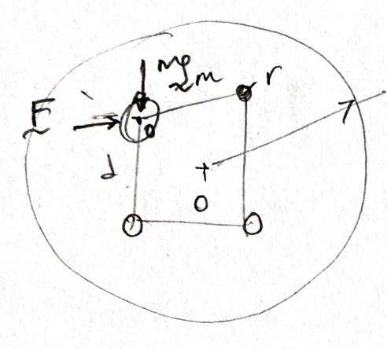
the size and shape does not matter so long as we use the mass center to characterize the location of the mass
force equilibrium rules while the moment of forces are identically satistifed.
But when the body becomes the major actor in the theater, it accepts forces that are not necessarily concurrent at its center of mass, then
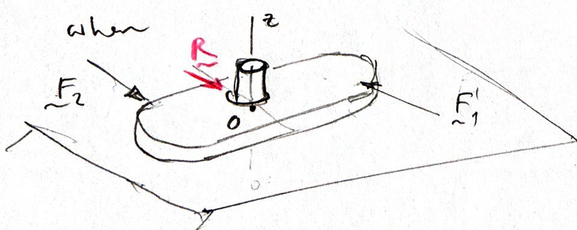
the force equilibrium ceases to be sufficient for motionlessness (the object rotates)
1.1. Rigid Body
A body is said to be rigid when it is incapable of deforming.
[freehand depiction of a spinning top with a T-bar attached to the center of its basal face]
- what is a center of rotation?
- relative rotation of the T-bar about the longitudinal axis of the top
The motion portrayed by the top is considered as general spatial (3-D). The spatial motion of a rigid body can be resolved by 6 degrees-of-freedom (DOF).
In this course we consider mechanical systems that exhibit planar motion only!
- rotation about the plane normal (1 DOF)
- translations in plane (2 DOFs)
- the 6 DOFs of spatial motion are reduced to 3 DOFs in planar motion
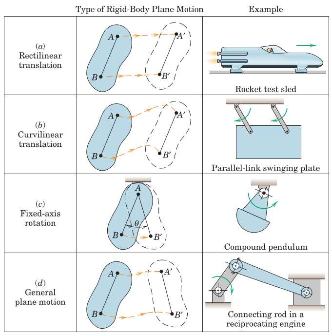
2. Kinematic Relations
2.1. Linear Kinematics
The relations between distance, velocity and acceleration along the translation path has already been covered: \(s\) is the path variable, \(v = \dot{s}\) is the velocity (tangent to the path), and \(a_t = \dot{v} = \ddot{s}\) is the tangential acceleration. Remember the differential relation \(a_t ds = v\,dv\).
2.2. Angular Kinematics
The rotation is measured from any line segment relative to a fixed reference axis by the angle from the fixed axis to the line segment, \(\theta\).
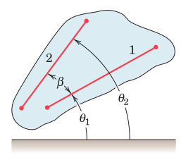
Note that, the rotations of two line segments may be measured as \(\theta_1\) and \(\theta_2\) which are related by a fixed angle \(\beta\) (which shall never change during the process due to the rigid nature of the body).
Thus,
Furthermore, the relations between angle, angular velocity and angular acceleration can be defined as
The case of constant angular acceleration can be simply integrated as:
2.3. Rotation about a Fixed Axis
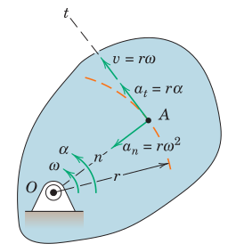
2.3.1. Rotation as a Vector Operation
When the plane of motion is identified with its normal \(\boldsymbol{n}\) in a 3-D domain:
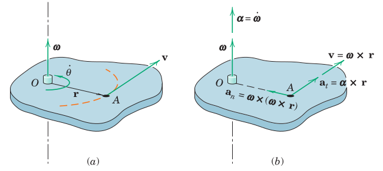
2.4. Examples
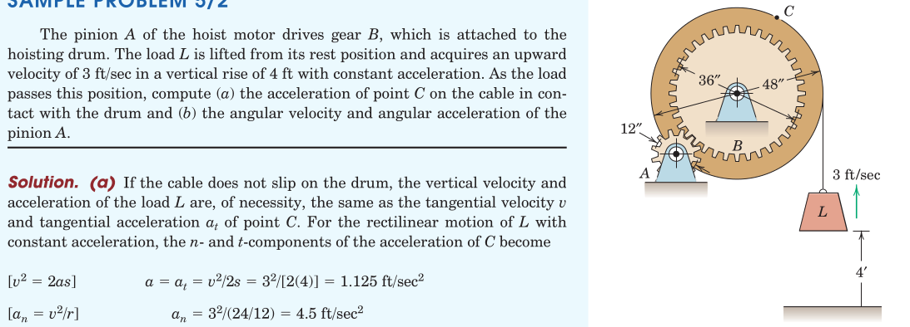
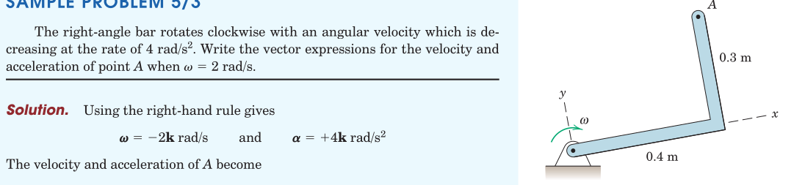
3. Absolute Motion Formulation
In general there are two ways to deal with dynamics of rigid bodies
- Absolute Motion
- Relative Motion
In absolute motion formulation the geometric relations between problem variables are formed and then their time derivatives are taken.
If the geometric relations turn out to be overly complex than it may be preferable to turn to the relative formulation.
3.1. Examples
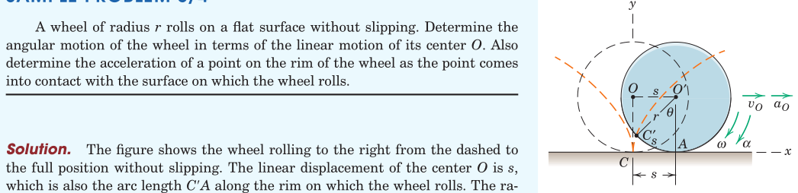
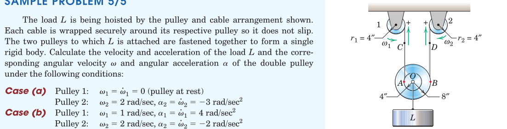
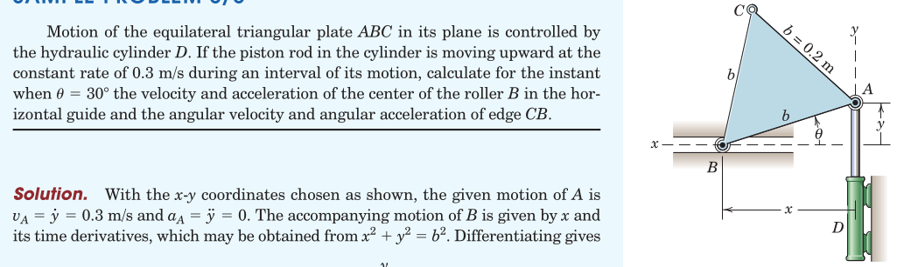

4. Review
From Hibbeler, Engineering Mechanics: Dynamics: Chapter 15: